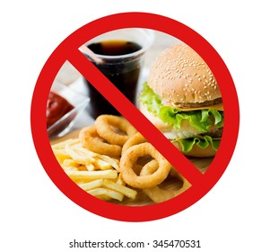

Importance of Healthy Food

Healthy food does not have merely one but numerous benefits. It helps us in various spheres of life. Healthy food does not only impact our physical health but mental health too. When we intake healthy fruits and vegetables that are full of nutrients, we reduce the chances of diseases.
Effects of Unhealthy Food
You become prone to cardiovascular diseases due to the consumption of bad cholesterol and fat plus sodium. In other words, all this interferes with the functioning of your heart. Furthermore, junk food contains a higher level of carbohydrates. It will instantly spike your blood sugar levels..